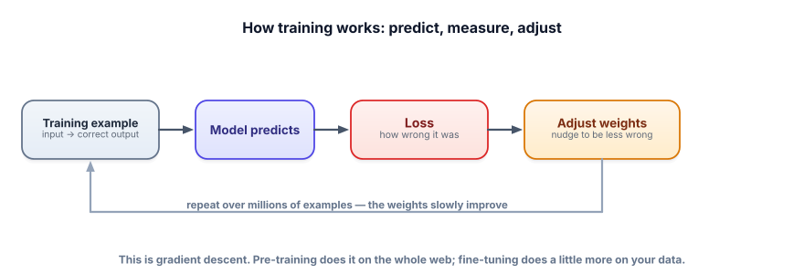

How training actually works
Fine-tuning stops being mysterious once you see what “training” really is: a loop that nudges numbers downhill to make the model less wrong. You don’t need the calculus — you need the mental model, because it explains data, overfitting, and every knob you’ll touch.
Training is just “guess, measure, adjust,” repeated
A model is a giant pile of numbers called weights (or parameters). Training shows the model an example, lets it predict, measures how wrong the prediction was, and nudges the weights a tiny bit to be less wrong next time — then repeats, millions of times. That’s the whole idea. Pre-training does this over the entire web (hugely expensive); fine-tuning does a little more of the same on your data (cheap), starting from an already-smart model.

The forward pass is the model making a prediction. The loss is a number measuring how wrong it was (lower is better). The gradient points in the direction that increases loss, so we step the opposite way — this is gradient descent. Backpropagation is the efficient method for computing those gradients across all the weights. The learning rate is how big each step is. An epoch is one full pass over your training data. You split data into a training set (to learn from) and a validation set (held out, to check honestly).
Roll the ball downhill
Here’s gradient descent on the simplest possible “model”: one weight, with loss = (weight − 3)². The lowest point is at 3. Take steps and watch it descend — then crank the learning rate too high and watch it overshoot. This is training, minus the billions of weights.
Gradient descent
The loop above, in plain Python. No libraries, no GPU — just the mechanism.
w = -4.0 # the weight we're learning
target = 3.0
lr = 0.1 # learning rate (step size)
for step in range(20):
loss = (w - target) ** 2 # how wrong we are
grad = 2 * (w - target) # direction loss increases
w = w - lr * grad # step the OTHER way
print(f"step {step}: w={w:.3f} loss={loss:.3f}")
# w marches toward 3.0 and loss toward 0 — that's learning.Real training is this exact loop, but w is billions of weights, the loss is “how wrong was the next-token prediction,” and the gradient is computed by backpropagation. Same idea, more numbers.
- Training = predict → measure loss → nudge weights down the gradient, repeated.
- Fine-tuning is just more of this on your data, starting from a pretrained model — so it’s cheap vs. pre-training.
- The learning rate controls step size: too small = slow; too big = overshoot/diverge.
- Watch training vs. validation loss: if training keeps dropping but validation rises, you’re overfitting.
- You don’t need the math — you need the loop, because it explains every knob.
During fine-tuning, your training loss keeps dropping but your validation loss starts rising after a few epochs. What’s happening, and what do you do?
1. In the demo, set the learning rate very high (≈1.0+). Describe what happens to the ball and why.
2. In plain words, what is the “loss” when fine-tuning a language model on instruction/response pairs?
3. Why can fine-tuning work with a few hundred examples when pre-training needs trillions of tokens?
▸ Show solutions & reasoning
1. With too high a learning rate, each step overshoots the minimum and lands further up the other side, so the ball bounces back and forth with growing swings and the loss increases — it diverges instead of settling. This is why the learning rate is one of the most important knobs: too small wastes time, too big breaks training entirely.
2. It’s a measure of how far the model’s predicted next tokens are from the actual tokens in your “correct” responses. For each position, the model assigns probabilities to possible next tokens; loss is high when it gave low probability to the right token. Minimizing it nudges the model to make your desired responses more likely. So you’re literally teaching it “in this situation, this is the likely output.”
3. Because fine-tuning starts from a model that already learned language, facts, and reasoning during pre-training — you’re not teaching it to think, just to adjust its existing behavior toward your task. It only needs to learn the narrow pattern (your format/style/task), which a few hundred good examples can convey. Pre-training had to learn everything from scratch; fine-tuning stands on its shoulders.
The loop has a handful of knobs you’ll meet in any fine-tuning tool. Learning rate (and its schedule) sets step size — usually small for fine-tuning, since you’re gently adjusting a good model, not reshaping it. Epochs set how many passes over the data; too few underfits, too many overfits, so you watch validation loss and stop when it stops improving (early stopping). Batch size is how many examples you average each step (bigger = smoother but more memory). You don’t tune these blind — you watch the train and validation curves and let them guide you.
The deepest idea here is that the goal isn’t low training loss — it’s generalization, doing well on data the model never saw. A model can drive training loss to near zero by memorizing, which is useless (it’ll fail on real inputs). That’s why the held-out validation set is sacred: it’s your only honest read on whether the model learned the pattern or just the answers. Everything in fine-tuning — data quality, regularization, early stopping, evaluation (Lesson 5.6) — is in service of generalization. Keep that north star and the knobs make sense: each one is a lever for “learn the pattern, don’t memorize the examples.”
The single biggest determinant of whether your fine-tune works isn’t the algorithm — it’s the data you feed it. Next: data preparation.